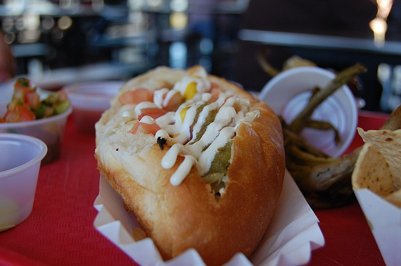
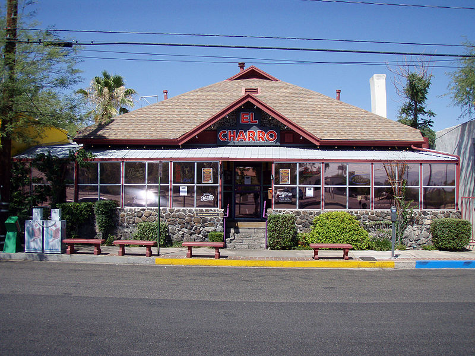

Explore Tucson's Delicious Food
Tucson’s food serve bold flavors with dishes like Sonoran dogs and tacos. Whether downtown or at events handmade meals on the go. Discover Tucson’s amazing food scene!

Local Food Trucks
Tucson is known for its unique food trucks that offer a variety of cuisines.
- Bahndicted: Vietnamese cuisine, offering banh mi sandwiches, smoothies, and milk tea.
- Gigi's Mexican Peruvian Fusion: A fusion of Mexican and Peruvian dishes, including the popular Chimichurri bowl.
- Taco'Queta: Offers an assortment of Mexican foods including tacos, burritos, and quesadillas.
- Fork & Fire: Specializes in barbecue cuisine, serving a range of smoked meats.
- The Blacktop Grill: Specializes in gourmet comfort food, including decadent hot dogs and quesadillas with a Sonoran twist.
These food trucks can be found all around town and at many different events. Be sure to check them out when you're in Tucson!
Local Restaurants
Tucson is known for its unique food that offers a variety of cuisines.
- Brother John's: Offering classical BBQ and assorted beers with cornhole and other games for the whole family.
- The Parish: Southern fusion, featuring Louisiana-inspired dishes, cocktails, and live music.
- Prep & Pastry: Brunch spot offering artisanal pastries and innovative breakfast dishes.
- Beyond Bread: Bakery and café known for fresh sandwiches and baked goods.
- HUB Restaurant & Ice Creamery: American comfort food and house-made ice cream.
- Pacos: A family-owned taco shop with authentic Mexican food.
- El Charro: One of the nation's oldest restaurants, this cafe serves a variety of foods.
- El Guero Canelo: Serves authentic Sonoran hot dogs that Tucson natives love.
